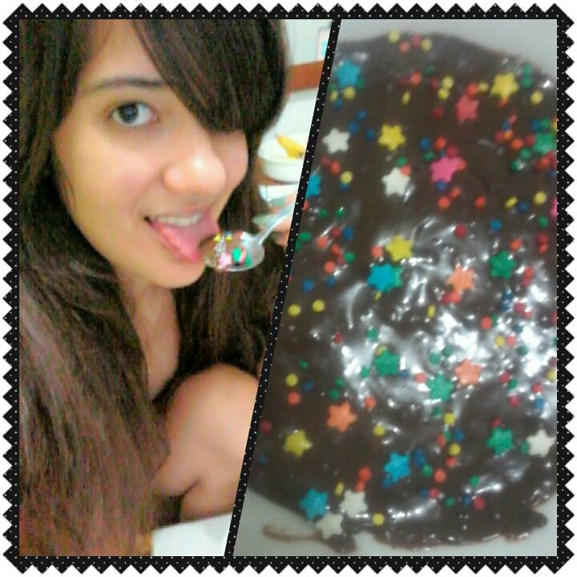
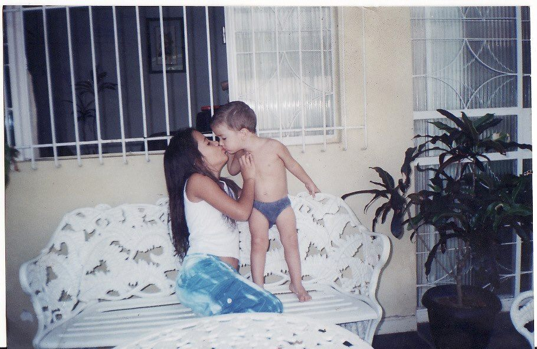
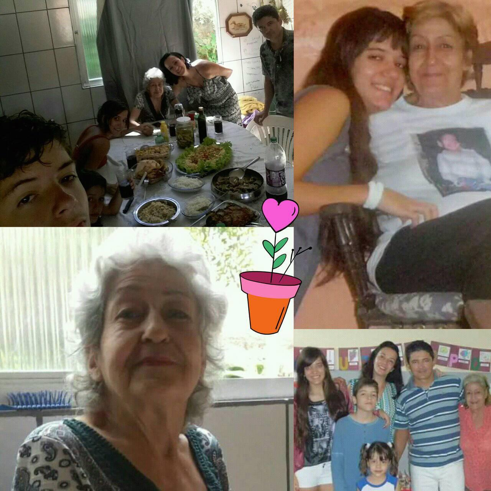
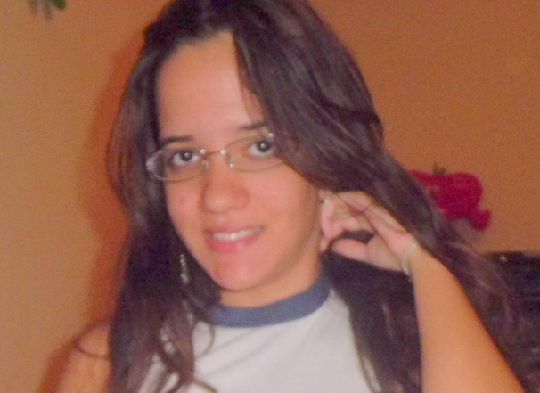
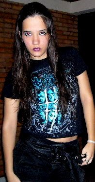
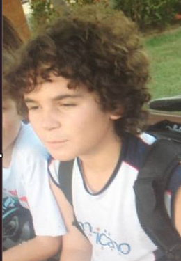
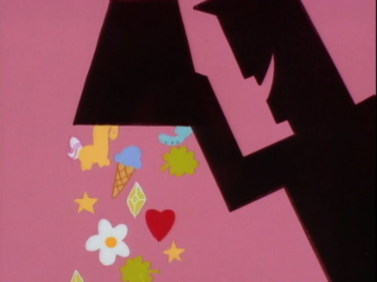

Tudo começou em 25 de fevereiro de 1994 em uma
metropole rural, chamada Teófilo Otoni, um pai meio
bravo mas muito inteligente e uma mãe meio doida mas muito amorosa
deram vida a menina dos meus sonhos.

Essa meninha foi crescendo e se tornou uma adolescente linda e meio esquisita
e amorosa. Na adolescente, na fase que os hormonios começam a se aflorar, ela teve
a benção de ter um contato prematuro com a internet que fez ela desenvolver o lado
safado e meio nerd dela, que eu amo tanto.

Também foi nessa época que ela desenvolveu seu
interesse por caras mais novos, que facilitou um pouco
a conquistar o coração dessa donzela.

Foi criada por uma familia que se encaixa perfeitamente
na música do programa A Grande Família, muito animada e unida, grudada
numa Vózinha que fazia tudo por ela. A combinação disso tudo
resultou na pessoa mais leal e de família que já conheci, que me faz
querer ser igual e me faça ver que ela é a mãe perfeita pros meus filhos.

O pai sempre estimulava ela ler e estudar, que fez com que
ela fosse muito inteligente e se interessasse por caras mais inteligentes,
outra coisa que facilitou a conquista do coração dela, já que sou o cara mais inteligente
do Edifício Saint Marie.

O pai dela precisou se mudar algumas vezes por conta do trabalho,
o que fez com que ela sempre estivesse perdendo bons amigos. Foi ai que ela
desenvolveu um pouquinho de dificuldade de confiar nas pessoas, mas que vou mostrar
pra ela que comigo não precisa disso.

Ao longo da vida teve a coragem de se envolver com alguns caras e mal ela sabia
que o amor da vida dela era esse pitel de cabelos enrolados, que desde aquela
época sonhava em encontrar uma menina igual a ela em algum joguinho online (que ela também jogava).
Ela sempre foi muito apaixonada em quase todos que ficou, muito fofa
e romântica como se estivesse vivendo um filme romântico água com açucar.
Porém alguns tiveram a coragem de machucar essa menina perfeita e fizeram ela se tornar
uma espécie de pinscher que é fofo ao mesmo tempo.

E a combinação de todos esses acontecimentos (e muitas outros), foram montando essa
mulher complexa e ao mesmo tempo simples, com muitas qualidades e poucos defeitos,
que se encaixam na minha complexidade esquisita, com muitos defeitos e poucas qualidades,
(que aos poucos ela está fazendo ser o contrário).